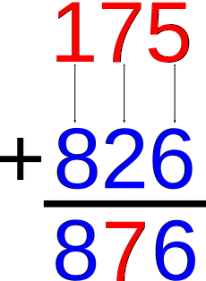
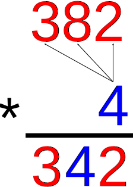

On the Subject of Decimation
The numbers don't lie. Okay well maybe they do.
Oh dear.
There will be two 2-digit numbers on the large displays and a small operator. Perform the operation on the two numbers and submit it using the keypad. There will be three stages.
- The first stage will always be addition.
- The second stage will always be multiplication by a single digit.
- The third stage will always be multiplication.
However, this module's evidently faulty mechanics cause the module to use an altered arithmetic system. The module will use dismal arithmetic, also known as lunar arithmetic, to perform its operations.
Dismal addition is a variant of standard addition in which when adding two digits, the result is the higher of the digits.
Dismal multiplication is a variant of standard multiplication in which multiplying two digits, the result is the lower of the digits.
Note that the commutative, associative, and distributive properties apply here: a×(b+c) = a×b + a×c
|  |  |  |